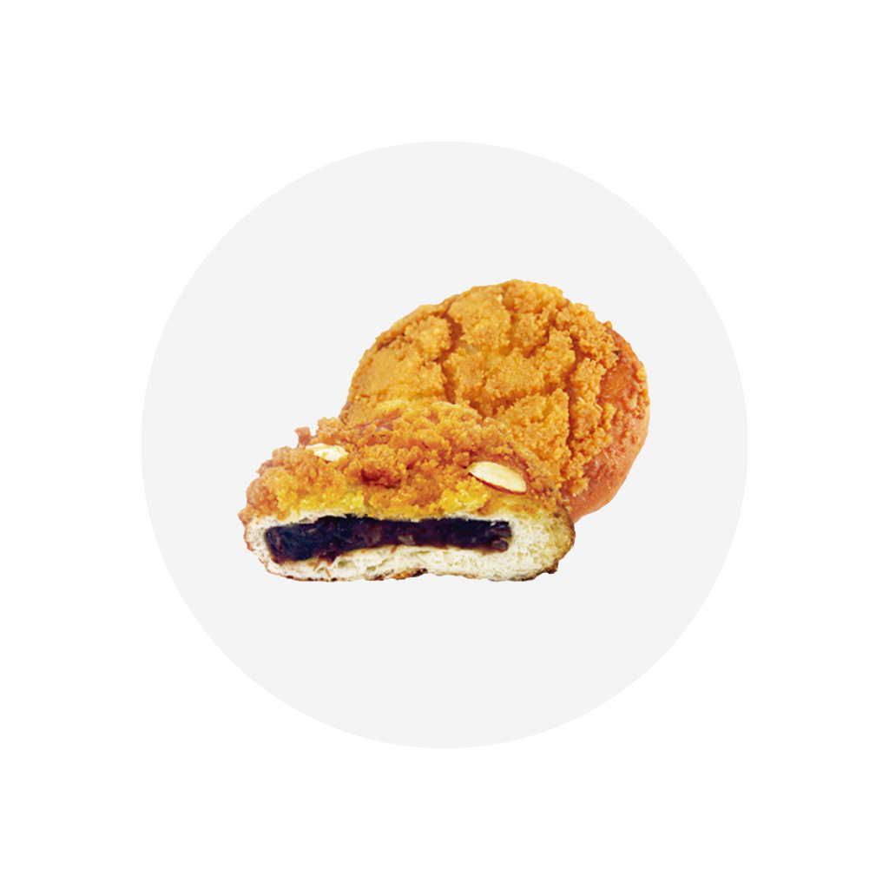
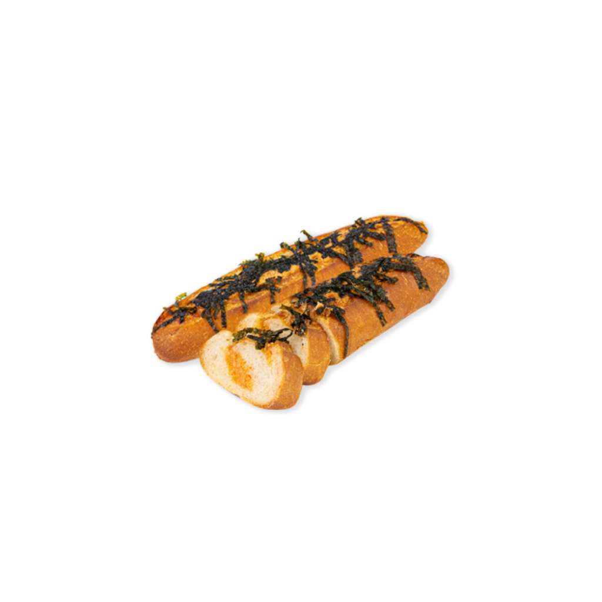
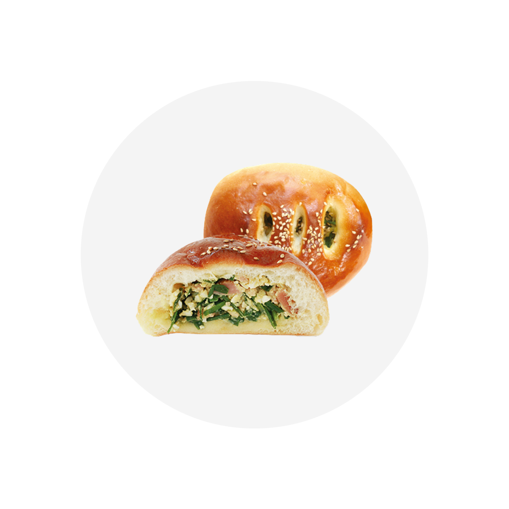

1956년, 대전역 앞 작은 찐빵집에서 시작된 성심당은
대전시민의 자부심과 사랑으로 성장하여 대전을 대표하는 향토기업이 되었습니다.
우리는 가톨릭 정신을 바탕으로 지역 사회에 봉사하는 가치 있는 기업이 되며,
'맛있는 빵, 경이로운 빵, 생명의 빵' 을 통해 '사랑의 문화' 를 이루어 가겠습니다.
추천메뉴

01
튀김소보로
1980년 탄생 소보로, 앙금빵, 도넛의 3단 합체빵. 하나의 빵으로
3가지 맛을 즐기실 수 있는 성심당 NO.1 튀김소보로
02
명란 바게트
짭쪼롬한 명란과 쫄깃 꼬소한 바게트가 만나 먹을수록
손이 가는 빠삭 짭쪼롬 명란바게트


03
판타롱 부추빵
푸룻푸룻 싱싱한 부추를 계란샐러드, 햄과 함께 직접 버무려 만든
부추향 가득 만두 같은 영양만점 판타롱 부추빵